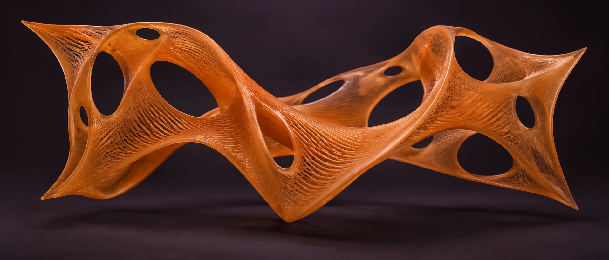

Fix the corners, free the middle
Pin down the few things that cannot move / the user need, the deadline, the honest constraint / then let everything between them deform. Most design fights are about corners that were never agreed.
Rigid problems. Flexible thinking.
I design and build products that adapt to the people using them.
Drag the membrane. Feel how a system responds.
Persimmon membrane, tension 42. Drag on the surface to deform it.

A short statement of method, before the evidence. The work below is where it has been tested.
Rigid problems
do not need rigid answers.
They need material that can stretch / and recover.
Soft Systems is how I approach product work: hold the problem firmly, keep the solution pliable. A checkout flow, a voice interface, a design system / each is a membrane stretched between fixed points of business, technology and human behaviour.
Push on one point and the whole surface should respond, not tear. That means prototypes early, assumptions under load, and enough structure that the next decision stays clear. Less noise. More purpose.
The membrane in the hero is the same idea, made literal: thousands of small springs, each unremarkable, together behaving like a material with a point of view.
Four independent products from the AI-Created lab. Each link opens the live product.
A private place to think out loud. Voice-first journaling built around the most natural interface you have: your own voice.
AI toolVoice-first journalingTailored resumes in human language. Career tools that translate experience into words a person would actually say.
Career toolResumes, in human languageRealtime ChatGPT voice, within reach. A smaller surface demands a clearer idea / AI for the wrist, designed down to the glance.
AI toolwatchOS · voiceArcade combat rebuilt as a fast vector duel. Proof that the same hands that simplify a checkout can still chase a high score.
PlayArcade combatFive systems, stretched across twenty years / retail, search, cloud, entertainment. The constant is the method: prototype the decision, then build the thing.
Cart, checkout, wallet, account, and self-checkout. Designing across the commerce journey while advancing AI practice.
Led mobile, voice, and personalization design through a major retail transformation.
Built high-fidelity prototypes for Cloud AI, Assistant, and Android to help teams settle product decisions quickly.
Directed global prototyping teams, personalization work, design process, and senior talent development.
Led UX and engineering for multilingual platforms across an international entertainment portfolio.
Three working principles. They apply as well to a membrane of springs as to a product roadmap.
Pin down the few things that cannot move / the user need, the deadline, the honest constraint / then let everything between them deform. Most design fights are about corners that were never agreed.
A surface only shows its character when pushed. Build the prototype early, press on the weakest assumption, and watch how the whole system answers / before the expensive version exists.
Stretching is easy; springing back is the craft. States, errors and edge cases are the membrane returning to shape. If recovery is designed, deformation stops being damage.
Product design, engineering and AI / or the interesting overlap of all three. If it needs to bend without breaking, I would like to hear about it.